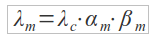

:: Tecniche e metodi a supporto della fidatezza ::
Al fine di poter effettuare una valutazione della fidatezza del sistema è possibile condurre una duplica valutazione:
- Valutazione probabilistica o quantitativa, che ha come obiettivo quello di effettuare una stima degli attributi delle dependability del sistema o delle sue componenti;
- Valutazione qualitativa, che ha come scopo quello di effettuare come un guasto dei componenti possa portare ad una perdita di funzioni, prestazioni e a malfunzionamenti di sistema e, di poter eseguire anche un'analisi delle componenti.
Per poter effettuare delle valutazioni quantitative si possono usare due tecniche:
- Sperimentale: costruendo un prototipo del sistema, con i seguenti svantaggi: i)Non sempre è possibile sviluppare il prototipo; ii)metodo costoso e complesso; iii)non facile valutazione della dependability;
- Analitiche e simulative: le grandezze sono ricavate direttamente dal modello matematico o dal grado del sistema.
Tecniche quantitative
I sistemi che vengono analizzati mediante queste tecniche si suddividono in due classi principali: sistemi discreti e sistemi continui. Nei sistemi discreti una o più quantità cambiano istantaneamente in istanti di tempo separati, nei sistemi continui le quantità cambiano con continuità nel tempo.
Nei modelli analitici le componenti del sistema sono rappresentate da variabili e parametri, le cui interazioni sono rappresentate attraverso relazioni fra queste entità. Nei modelli simulativi il comportamento del sistema viene riprodotto mediante un simulatore, il quale permette la rappresentazione dell'evoluzione temporale del sistema stesso.
Si può effettuare anche un distinzione tra modello statico e modello dinamico. Il modello statico permette la rappresentazione di un sistema in un preciso istante temporale, mentre in un modello dinamico si rappresenta l'evoluzione del comportamento di sistema. Inoltre definiamo un modello deterministico quando non contiene nessuna componente di probabilità per quanto riguarda il suo comportamento, mentre definiamo un modello stocastico quando il suo comportamento segue una certa distribuzione di probabilità.
Valutazione della disponibilità mediante modelli analitici
Generalmente in queste tecniche il calcolo dell'affidabilità e della disponibilità devono essere fatti prima su tutti i componenti, i quali risultano interconnessi tra loro, che formano il sistema. L'affidabilità e la disponibilità passa attraverso l'analisi del tipo di interconnessione che c'è fra i componenti, dalla qualità dei componenti stessi e dalle politiche di manutenzione, tali considerazioni vanno effettuate fino ai singoli componenti del sistema, i quali non risultano più scomponibili.
In questo tipo di approccio non sempre è possibile effettuare un'analisi con un modello solo, capita quindi che lo studio dell'affidabilità e della disponibilità viene fatta con una combinazione di più modelli. Tra le tecniche di modellazione più utilizzate troviamo l'analisi combinatoria e i processi di Markov.
Le tecniche combinatorie sono quelle più semplici ed intuitive, sia nella costruzione che in quella di soluzione del modello. Per contro hanno che sono applicabili quando si ha una conoscenza approfondita del sistema, dunque spesso sono da usare a processo completato, esse non permettono di rappresentare sistemi riparabili.\\Le tecniche di Markov, invece, permettono di rappresentare sistemi riparabili anche molto più complessi rispetto a quelli trattabili nelle tecniche combinatorie. Infine esse consentono di trattare quei casi in cui i guasti dei componenti, che costituiscono il sistema, possono avvenire in modo indipendente tra i componenti stessi.
Modelli di Markov
In questi modelli l'affidabilità è rappresentata in modo matriciale, tale rappresentazione consente, sotto determinate ipotesi, di studiarne l'evoluzione temporale.
Nei modelli di Markov la valutazione dell'affidabilità passa attraverso la rappresentazione grafica del sistema grazie ai RBD, con questa tecnica siamo in grado di vedere come l'inaffidabilità di un singolo componente impatta sul sistema. Un sistema che possiede N elementi avrà 2N configurazioni mutuamente escludentesi, che prendono il nome di stati del sistema. Uno dei vantaggi principali di questi modelli è che essi consentono di rappresentare in modo efficiente la situazione di guasto e di riparazione di un componente. Al solito il passaggio tra uno stato ad un altro è rappresentato mediante una transizione.
Il problema principale dei modelli di Markov è quello della crescita esponenziale degli stati, causata proprio dal numero di configurazioni che ci possono essere. Tuttavia esistono degli algoritmi che consentono di applicare tale modello per effettuare l'analisi dell'affidabilità e della disponibilità. In tali algoritmi si devono fare le seguenti considerazioni:
- Il processo deve essere STAZIONARIO, ovvero deve mantenere un comportamento che sia lo stesso in qualsiasi istante in cui viene preso in considerazione;
- Il processo deve essere SENZA MEMORIA, ovvero il comportamento casuale futuro del sistema deve dipendere solo ed esclusivamente dallo stato attuale, senza tenere in considerazione il suo passato.
Gli stati che un sistema può avere possono essere classificati nel seguente modo:
- insieme ergodico: è un insieme di stati in cui, una volta che il sistema vi entra non sarà più in grado di uscirne;
- insieme transitorio: un insieme di stati tali per cui, una volta che la transizione porta fuori il sistema da questi suddetti stati, esso non potrà più tornarci;
- stato assorbente: è uno stato in cui, una volta che il sistema giunge in esso non è più in grado di uscirne (es: componente non riparabile, si passa da uno stato di corretto funzionamento ad uno stato di non corretto funzionamento, tale stato è detto assorbente, ovvero non c'è più modo di tornare indietro).
Tecniche qualitative
Come già detto in precedenza le prestazioni e la qualità di un sistema passa attraverso l'analisi fatta sui requisisti RAMS sul sistema stesso. Questa analisi è un'attività fondamentale, in quanto determina quei requisisti che costituiscono la fidatezza del sistema, ciò impatta anche sul costo del ciclo di vita del prodotto.
Una volta verificati e definiti tutti i requisiti di fidatezza del sistema, bisogna effettuare un'analisi sulla possibile realizzazione degli stessi, a tale scopo sono stati introdotte diverse metodologie, le quali si differenziano sul livello di fidatezza che si desidera raggiungere. Le principali metodologie studiate sono le seguenti:
- FMEA (Failure Mode and Effect Analysis): Analisi dei modi e degli effetti di guasto;
- FMECA (Failure Mode, Effect and Criticality Analysis): Anali dei modi e degli effetti di guasto e della loro criticità;
- FTA (Failure Tree Analysis): Analisi degli alberi di guasto.
In generale possiamo dire che queste tecniche di analisi si distinguono in due classi: di tipo induttivo o di tipo deduttivo. La prima metodologia fornisce un'analisi di tipo bottom-up, ovvero partono dal guasto di livello più basso (a livello di componente dunque), fino a verificarne l'effetto a livello di sistema. La seconda metodologia invece fornisce un'analisi di tipo top-down, la quale fa il processo inverso, ovvero parte a livello di sistema e giunge fino a livello di componente.
Analisi dei modi e degli effetti di guasto (FMEA)
L'analisi FMEA è condotta con lo scopo di individuare o potenziali modi di guasto, le cause e gli effetti sulle prestazioni e, laddove sia possibile, di sulla sicurezza delle persone, dell'ambiente e del sistema. Questo tipo di analisi, impiegata in fase avanzata, consente di individuare eventuali carenze di sistema, così da poter suggerire le modifiche necessarie per il miglioramento dell'affidabilità e, più in generale, della disponibilità.
Tale analisi è particolarmente adatta per per lo studio dei modi di guasto che possono incorrere anche tra dispositivi di natura diversa.
La FMEA implementa la metodologia induttiva, dunque parte dal livello più basso fino a raggiungere il modo di guasto del sistema. L'analisi FMEA dunque consente di comprendere il comportamento di un componente (che sia esso una scheda elettronica, un componente meccanico, ecc), e di stabilire in che modo il suo comportamento influisca sull'intero sistema qualora esso si trovi in uno stato di avaria. Inoltre tale metodologia si assicura sempre che la metodologia si guasto non abbia conseguenze gravi per le persone e o per il sistema stesso, dunque l'analisi si prefigge come obiettivo la rilevazioni si situazioni di guasto e di verificare che le soluzioni, utilizzate per far fronte al guasto, siano efficienti.
Per tutti questi motivi è utile portare avanti l'analisi FMEA in modo rigoroso ad ogni passo della progettazione del sistema, anche se è comunque utile effettuare tale analisi a posteriori (ovvero una volta che viene realizzato il sistema).
Una FMEA consente di:
- identificare i guasti, anche se essi siano guasti indotti;
- determinare l'esigenza di eventuali ridondanze;
- determinazione di eventuali materiali, dispositivi o componenti adeguati;
- identificare conseguenze anche gravi dei guasti, dunque se è necessario rivedere il progetto per evitare tali rischi;
- ottenere aiuto nell'identificare le procedure di collaudo e di manutenzione, suggerendo eventuali modi di guasto;
- definizione di alcune caratteristiche software, se presente.
Il concetto di criticità
L'analisi della criticità viene effettuata nell'analisi FMECA, nonostante ciò essa viene presa in considerazione anche in questa tecnica qualora ce ne sia bisogno.
La criticità è definita come il grado di attenzione che si deve dare ad un guasto/evento/non conformità e dipende sia sia dalla probabilità con cui esse si possa verificare, sia dalle conseguenze che esso può apportare. In particolare con la criticità si pone l'attenzione sulle conseguenze che il guasto/evento/non conformità può avere sulle persone, cose o sistema, va da sé che definire il grado di attenzione da avere non è compito facile.
Considerazioni conclusive sulla FMEA
Risulta chiaro che più un sistema diventa complesso più l'analisi FMEA diventa complessa, noiosa e pieni possibili ripetizioni. Un punto a vantaggio di chi dovrà eseguire tale analisi è che difficilmente si dovrà partire da zero, sarà dunque possibile sfruttare parti di analisi fatte su altri sistemi (una sorta di riuso del software).
Analisi dei metodi degli effetti di guasto e della loro criticità (FMECA)
Tale analisi è già stata effettuata, solo in modo quantitativo ovvero facendo solo una stima della dependability dei vari componenti. Qualora l'analisi della criticità fosse inderogabile, ecco che tale analisi ci viene in aiuto, in quanto poter stabilire quali siano le conseguenze di un evento indesiderato (come un guasto o un'avaria) può essere di grande aiuto. Quali possono essere gli eventi critici che ci portano ad effettuare un'analisi di questo tipo?
- Morte o lesione a carico delle persone;
- Danni all'apparecchiatura;
- Danni economici derivanti dalla perdita di funzioni da parte del sistema;
- Incapacità di eseguire un compito a causa del malfunzionamento dell'apparecchiatura.
Una volta individuati i possibili modi di guasto, bisogna studiare la probabilità con cui essi ricorrono, per effettuare tale analisi bisogna individuare il tasso di guasto dei componenti.
FMECA basate sul concetto di rischio
In questa sezione si studia l'analisi FMECA sulla base di due concetti il Rischio R e di Risk Priority Number (RPN). Questi due concetti danno luogo a due possibili FMECA.
Il Rischio R è identificato dalla seguente relazione:
R = S * P
dove:
- S (Severity) è la severità e rappresenta la stima di quanto l'effetto del guasto impatta sul sistema o sulle persone. Tale classificazione in genere è espresso in gradi di criticità;
- P è la probabilità che il modo di guasto si verifichi.
La valutazione dell'RPN invece è data dalla seguente relazione:
R = S * O * D
- O (Occurence) è la probabilità che un modo di guasto di verifichi in un determinato tempo, che spesso coincide con il tempo di vita del componente in esame;
- D (Detection) è la stima della possibilità di individuare/diagnosticare ed eliminare/prevenire l'insorgenza del guasto prima che esso di verifichi;
- S è la Severity.
Più alto è il valore del parametro D meno probabile è la possibilità di individuare il gusto e viceversa.
FMECA basate sul tasso di guasto
La stima della criticità può essere fatta anche attraverso lo studio del tasso di guasto dei componenti. Tale scelta non è sempre ben ripagata, in quanto i valori dei tassi di guasto, presenti nelle banche dati, non fanno riferimento ai modi di guasto. Inoltre bisogna aggiungere che non sempre i valori che ritroviamo nella banca dati sono sempre affidabili.
La stima del tasso di guasto è data dalla seguente relazione:

dove:
- λm: è il tasso di guasto del singolo modo di guasto che interessa analizzare;
- λc: è il tasso di guasto del singolo componente;
- αm: è la probabilità che il componente guastandosi si guasti con il modo di guasto m;
- βm: probabilità condizionata degli effetti del modo di guasto, ovvero la probabilità che, a fronte di quel guasto si produce proprio quell'effetto critico in esame.
Analisi dell'albero dei guasti (FTA)
L'analisi dei guasti mediate questa tecnica di rappresentazione fornisce un mezzo che produce ottimi risultati in sede di analisi, se condotta fin dai primi passi di progettazione. Lo studio fornisce la probabilità con cui determinati eventi possono verificarsi. L'analisi viene condotta seguendo le fasi:
- Costruzione dell'albero logico dei guasti: si definisce l'evento critico finale e si passa ad analizzarlo a ritroso, ovvero si cercano tutte le possibili cause che portano ad esso;
- Valutazione probabilistica dell'albero dei guasti: la probabilità di accadimento dell'evento finale viene opportunamente stimata, associando ad ogni evento primario una probabilità.
Costruire un albero di questo tipo non è cosa da poco, in quanto esso comporta l'apprendimento di tutte le informazioni in merito al sistema.
L'albero dei guasti origina dall'evento finale (conosciuto anche come top-event), che rappresenta la situazione di pericolo o di mancato raggiungimento di determinate prestazioni. Il top-event può essere visto come uscita di una porta logica, i cui ingressi (ovvero gli eventi) possono generare l'evento finale stesso. A loro volta gli eventi di ingresso possono essere visti come eventi di uscita per un livello più basso.
L'analisi dell'albero dei guasti
L'analisi ha come obiettivo quello di stabilire l'identificazione degli eventi che possono portare al guasto del sistema, inoltre dice anche la probabilità con cui tale evento può verificarsi.
Torna alla pagina di Affidabilità Dei Sistemi